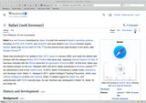
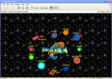
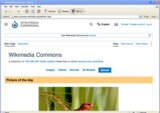
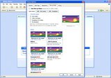
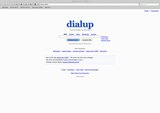

Dialup is a web browser for the Mac that looks and feels like the browsers of 2001–2004: the blue Windows XP title bar, the brushed-metal Mac toolbar, the grey 3D bevels of Windows 98. Underneath it's modern WebKit, the engine Safari uses, so today's web works fine. Turn on Dial-up Mode and pictures trickle in at modem speed while the status bar counts down “(3 items remaining)”.

Dialup in the Luna skin, visiting the 1996 Space Jam site. Click to enlarge.
How to install
There are two ways. Pick one.
1 The one-liner (easiest)
Open Terminal, paste this line and press Return. It downloads Dialup into your Applications folder, and you won't get a security warning when you open it.
curl -fsSL https://raw.githubusercontent.com/viktorfroberg/Dialup/main/install.sh | sh
Careful people read a script before running it: read install.sh first.
2 Download the zip
- Download Dialup.zip and unzip it.
- Drag Dialup.app to your Applications folder.
- Open it. The first time, macOS blocks it, because Dialup isn't notarized by Apple.
- Go to System Settings → Privacy & Security, scroll down and click Open Anyway.
Updates are built in. Choose Check for Updates… in the Dialup menu (or Help menu), and Dialup also checks quietly when it starts. After the first install, updates install without any warnings.
Features
- Three skins. Luna (Windows XP, 2001), Aqua (Mac OS X, 2003) and Classic (Windows 98/2000) each restyle everything: title bar, caption buttons, toolbars, menus, dialogs, tooltips and the status bar. The skin draws the whole window frame, rounded corners included.
- Dial-up Mode ⇧⌘D. Pictures load line by line at 56k, ISDN or 512k speed with a live “(n items remaining)” count. There's a dial-in sequence, 256-colour “GIF” pictures, faint CRT scanlines and old fonts. Hard mode puts the whole page in 16-bit or 216 web-safe colours, dithered if you like.
- Ad and tracker blocking, on by default, using WebKit's native content blocking, the same engine Safari's blockers use.
- Tabs, or one window per page. You choose in the Setup Wizard, like it's 2004. Session restore loads tabs lazily.
- A 2004-style start page. A search engine front page with Web, Images, News, Wikipedia and Archive tabs, one big box and two buttons. The portal page, with a webring and 88x31 buttons, is one click away.
- Wayback button. Reload the page you're on as the Wayback Machine saw it in a year you pick.
- Favorites menu, Links bar and Add to Favorites ⌘D. Import and
export the classic
bookmarks.htmlformat. - Era details. Padlock and certificate dialog, security zone in the status bar, throbber, original synthesized sounds (including a modem handshake).
- Skinnable with CSS. The whole browser UI is plain HTML and CSS. A skin is one CSS file, so you can restyle it in any text editor.
Screenshots
Click a picture to see it full size.
 Luna
LunaWindows XP, 2001


AquaMac OS X, 2003
 Classic
ClassicWindows 98/2000


Dial-up ModePictures at 56k speed


Hard mode216 dithered colours
 Start page
Start pageA 2004 search engine


Dialup OptionsWith live previews
 Setup Wizard
Setup WizardOn first run


Start page, AquaIt matches each skin
What's New
First public release.
- Three skins: Luna, Aqua and Classic, with the window frame and corners drawn by the skin.
- Dial-up Mode, with hard mode (16-bit, web-safe and dithered colours).
- The start page, redesigned as a 2004 search engine front page.
- Tabs or one page per window, session restore, Wayback button, Favorites and Links bar.
- Ad and tracker blocking, on by default.
- Toolbar icons from the public-domain Tango Icon Library; the globe is drawn from Natural Earth map data. The Dock icon follows the skin.
The full list is in the changelog.
Links
| Source code | github.com/viktorfroberg/Dialup Build it yourself with Xcode. Instructions in the README. |
| All releases | Releases page |
| Report a bug | Issues on GitHub Found something broken? Please tell us. |
| License | MIT. Use it, fork it, reskin it. |